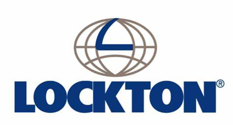

About Clifford Favors

Vice President, Lockton
Clifford Favors is an experienced leader in the insurance and risk management space. As Vice President at Lockton, Clifford provides expert consulting to businesses across industries, helping them navigate complex insurance policies and mitigate risk effectively.
With over 15 years of experience, Clifford is known for his strategic thinking, client-first approach, and ability to deliver customized solutions that drive results.
Education & Credentials
- Rice University - B.A. in Economics
- Licensed Insurance and Risk Management Consultant
- Featured Speaker at National Risk Conferences (2021–2024)
Career Timeline
- 2008: Started career in corporate risk strategy consulting
- 2013: Promoted to Senior Risk Advisor at a top national firm
- 2017: Joined Lockton and quickly rose through leadership ranks
- 2021–Present: Serving as Vice President, leading enterprise consulting engagements
Values
- Empowering clients with knowledge and clarity
- Delivering practical, actionable insurance strategies
- Commitment to professional growth and excellence